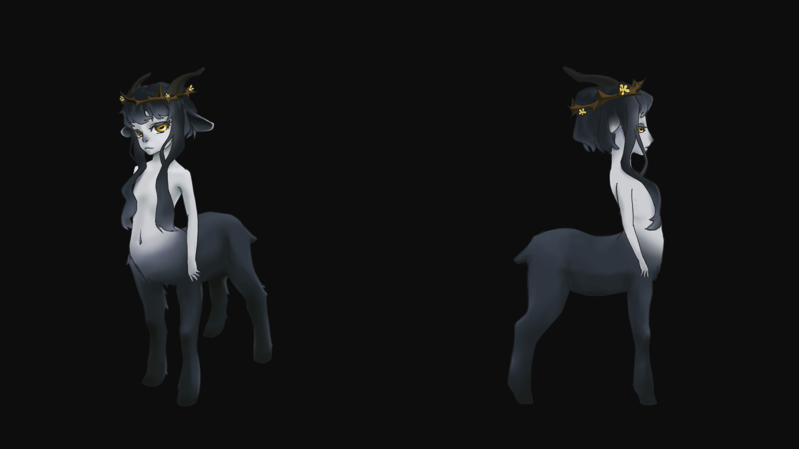

Mermina & Fairina Underhill - Tiny Planet
Mermina & Fairina live together in some tiny planets that are no larger than your head. Tiny planet is a experimental Android AR project done in collaboration. Lava part: characters, from design to Unity.

Pan Underhill
Some derivative of Pan?
Humanoina Underhill - The Falling
At the very beginning of time, there was a 3D creation class. Out of the many characters, a chosen one won the chance of coming to life. It was Humanoina Underhill. She beat all other competitors on her way falling down the stairway to animation.